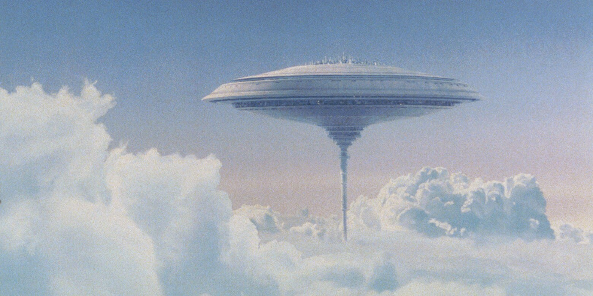

Opis: Cloud City, zawieszone w atmosferze gazowej planety Bespin, jest jednym z najbardziej spektakularnych osiągnięć inżynieryjnych w galaktyce. Miasto jest unoszącą się platformą, na której znajdują się luksusowe rezydencje, zakłady wydobywcze oraz centra handlowe. Jego główną funkcją jest wydobywanie gazu tibanna, który jest kluczowym składnikiem blasterów i innych technologii energetycznych.
Cloud City jest znane z wyjątkowego piękna i architektury, łączącej funkcjonalność z elegancją. Jego zarządcą był Lando Calrissian, który odegrał ważną rolę w historii rebelii.
Znaczenie: Miasto w Chmurach symbolizuje zdolność mieszkańców galaktyki do przekształcania nieprzyjaznych środowisk w kwitnące społeczności.
 ➡